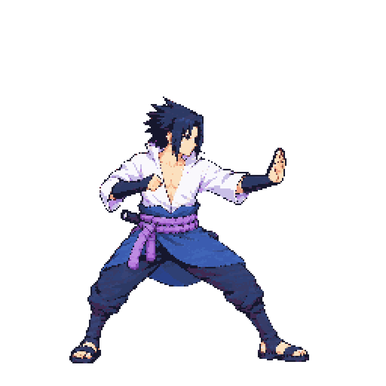
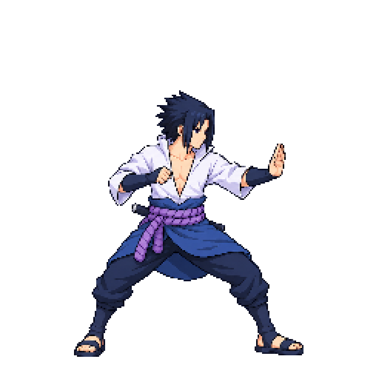
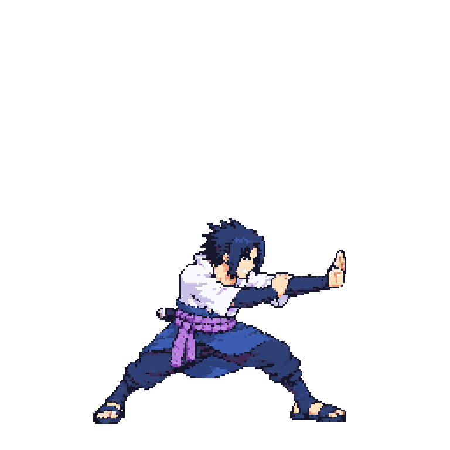

Approved idle f0 — head ~40 px, sash band ~46 px

beamStruggle v04 — scale calibration reviewReady for visual review; not yet approved. v04 is a no-call re-assembly of the unchanged v01 drawing. The measured scale now matches the approved idle landmarks; the shipped approval remains v01 until the user approves v04.
Source art SHA-256: 00ADE94028B861DE74CE8095B5644A75D0AA5106013D4B55764B0045FDB993F1. Packed Sasuke atlas: 4096×3072, 48 colors, 44 animations / 181 frames. v04 bodyHeight 152 (~1.25× the approved v01 setting 122). The head probe overlaps the outstretched navy sleeve, so frames 0–2 have version-specific exemptions and manual landmarks.







| Landmark | Approved idle f0 | v04 frames 0–2 | Result |
|---|---|---|---|
| Crown including hair to chin | ~40 px | 39–41 px | Within about ±2 px |
| Front sash band width, excluding loose ties/tails | ~46 px | 44–48 px | Within about ±2 px |
Claude supplied the calibrated two-landmark readings in art-camera relay #4; Codex packed v04 and visually checked the equal-density atlas comparison. The probe box includes the sleeve, so it is not used as a head-size verdict. This is scale QA, not an approval of design, pose, contact or gameplay. v02/v03 history is preserved in the measurement record.